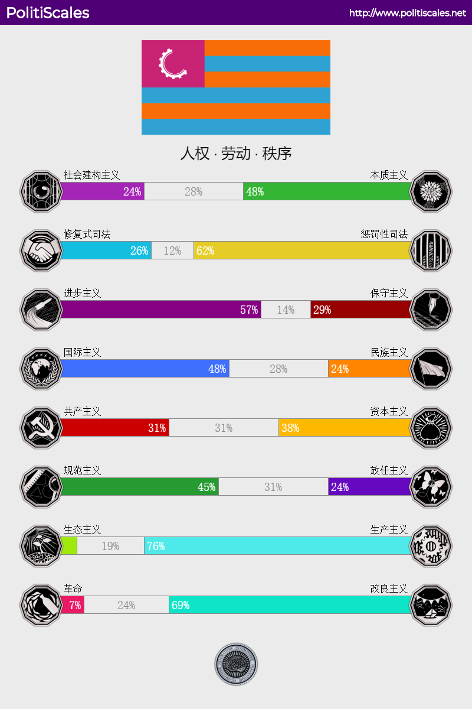

什么是PolitiScales测试
PolitiScale 是一个政治测试，使用8个维度的意识形态价值观来帮助你了解你在政治领域的归属。
我的测试结果

具体分析
社会建构主义/本质主义
为什么人们是这样的？这个维度是对同一问题相反的两极。
建构主义者认为，人们从他们的环境，尤其是社会环境中，建立自己，正是因为周遭的环境造就他们的特性，使他们变成他们现在的样子。
相反，本质主义者认为一个人的个性是源于他天生本来的样子，造就他的特性是内在的、天生的。
有点意外，测试结果显示我更偏向本质主义。我认为塑造一个人的特性，先天固然有影响，但更不能忽视后天所处环境的作用。“一个人的命运啊,当然要靠自我奋斗,但是也要考虑到历史的进程。”
修复性司法/惩罚性司法
赞成修复性司法的人认为，司法的作用是将被宣告有罪的人重新置于“正确的道路”上，使他们明白为什么他们不应该做他们所做的事情，为什么他们被宣告有罪，并伴随着他们一路恢复前进。
相反，惩罚性司法的支持者认为，司法的作用是劝阻的，既是为了被宣告有罪的人 （避免累犯），也是为了对社会的其他人 (让他们例子成为反面教材)。
显然地，我更支持惩罚性司法。修复性司法往往试图在犯人、被害者、社会寻求损失最小化的方案，让被害者一方获得赔偿，让社会秩序维持稳定以及让犯人改过自新。这种方案太过美好，且不现实。就像我坚决不支持废除死刑一样，我认为惩罚性司法通过高昂的违法成本(甚至是生命)震慑了许多潜在的违法分子，让这些人“有贼心没贼胆”，进而维护社会稳定。
进步主义/保守主义
进步主义者努力建设社会进步，创造一个更美好的社会，面向未来，而不关心传统。他们经常认为现在比过去好，有必要坚持这条道路。
相反，保守主义者希望保持现状，甚至重新插入一些已经被认为是已经消失的或者正在消失的价值观。传统，如同宗教的遗产，被认为是智慧的源泉。
我是进步主义者，生产力的发展必然带动思想的进步，并非所有落后消失的价值观/传统都需要得到保留。
国际主义/民族主义
国际主义者是一组身份不同的人，其共同目的是阻止在众多国家和他们的居民之间建立阶段制度，并尽可能促进他们的合作。最终目标是消除主权边界。
另一方面，民族主义者是由各种各样的思想组成，具体来说，认为本国和他的公司高于外国人。部分人也为每个人都有一个国家的想法辩护。
我更偏向国际主义的很大一部分原因是对近几年在国内社交平台上随处可见的暴论的反感。中国是由中国共产党领导的社会主义国家，国内民族主义却日渐高涨是很奇怪的。共产主义信仰理应高于民族主义，不可否认后者在近代中国发展至今的积极作用，但更要时刻警惕民族主义在某些情况下演变成的极端民族主义甚至种族主义。
共产主义/资本主义
共产主义是一个庞大的政治学说。在这个测试中主要区分共产主义中简单的指标，认为您是为生产资料的公共财产。
资本主义同样也是充满矛盾的理念。在这个测试中主要区分为资本主义中简单的指标，认为您是为生产资料的私有财产。
在这个选项上我并不想偏向哪一方。“不管黑猫白猫，能捉老鼠的就是好猫”
规范主义/放任主义
这个维度代表了政府对市场经济的态度。在这种情况下，生产资料的重要部分是私人的。放任主义者反对在不质疑资本主义的情况下需要采取手段。如果你更资本主义，这个维度代表你在经济方面的目标。如果你更共产主义，则此维度代表对当前经济系统所期望的最小错误。
规范主义是为了公共利益应予经济活动规范的一种观念。认为可以通过立法、规划、补助金、可变税收等来调节经济活动。
相反，放任主义认为经济活动不应受到监管，因为经济活动本身符合公共利益。它支持薄弱的立法、很少或根本没有补助金、固定的征税，往往国家在经济中的作用很薄弱，甚至完全抑制。
我支持规范主义。我对金融的了解不多，中国特色社会主义市场经济很明显遵循大体上的规范主义，相较于许多西方国家的放任主义，中国经济的不断高速增长已经证明了它的优越性。
生态主义/生产主义
生态主义者在政治上支持优先保护环境，尽量限制人类活动对生物多样性的影响，即使它意味着通过或多或少地改变我们目前的生活方式来限制这些人类活动。
生产主义者通过支持增加生产或使用对环境有某些影响的方法，来优先满足人类的需要。
我是坚定的生产主义者。环保固然重要，但要给人类发展让路。
革命主义/改革主义
革命者倾向于直接采取行动，往往是发生在合法性的边缘，以达到他们的目标：用完全不同的政治组织取代目前的组织。
改革派倾向于采取法律行动来实现他们的目标：逐步改变政治组织。通过合法手段，如选举、合法示威、请愿等方式。
我是改革派。革命往往过于激进，对现有政体的不足我倾向于通过合法方式去改革。
一些感想
对关心政治的人来说，我认为这个测试是有必要的，能够帮助了解自己内心的政治维度，从集体的角度回答“我是谁？”这个问题。但是人的选择很大程度上取决于自身的历史、文化、立场和偏见，相信经过一段时间的学习和再思考后，我的选择也会有些许(也可能很大)的变化。一年之后我将再做一遍这个测试，希望届时能有所反思与收获。